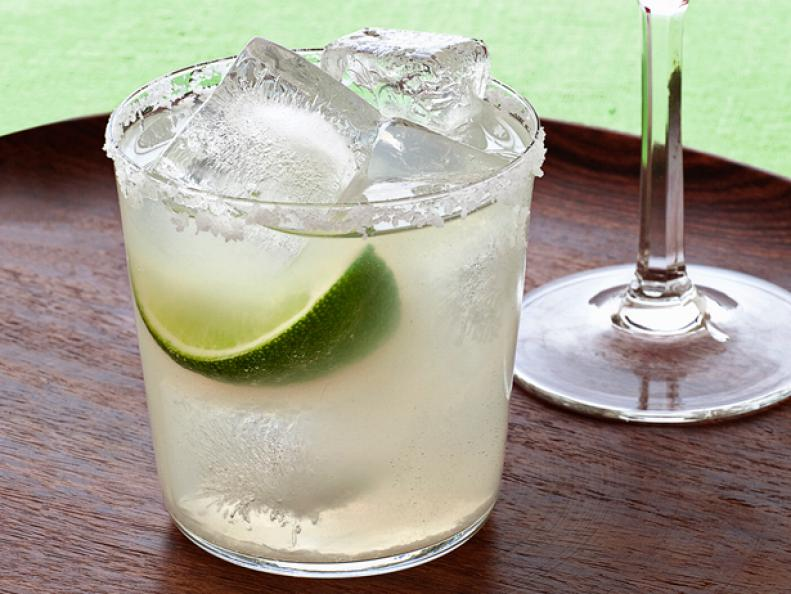

Penne with Vodka Sauce and Mini Meatballs

INGREDIENTS
- Kosher Salt
- 12 ounces Pene Pasta
- 8 ounces Ground Beef
- 3/4 cup grated parmesan cheese (about 1 1/2 ounces)
- 1/4 cup breadcrumbs
- 1 large egg, lightly beaten
- 3/4 cup chopped fresh basil
- 3 cloves garlic (1 minced, 2 sliced)
- 2 1/2 pounds beefsteak tomatoes, halved
- 2 tablespoons extra-virgin olive oil
- 1/4 cup vodka
- 1/4 cup heavy cream
- Freshly ground pepper
DIRECTIONS
-
Bring a large pot of salted water to a boil. Add the pasta
and cook as the label directs. Reserve 1/2 cup cooking water,
then drain.
-
Meanwhile, mix the beef, 1/4 cup parmesan, the breadcrumbs, egg,
1/2 cup basil, the minced garlic and 1/2 teaspoon salt in a large
bowl with your hands until just combined. Form into 3/4-inch
meatballs (about 20). Grate the tomatoes into a medium bowl;
discard the skins.
-
Heat a large nonstick skillet over medium heat. Add the olive oil,
then the meatballs. Cook, turning, until browned on all sides,
2 to 3 minutes. Add the sliced garlic and cook until just golden,
about 1 minute. Gradually add the vodka, then the grated tomatoes
and cream. Bring to a simmer and cook until the sauce thickens and
the meatballs are cooked through, 8 to 10 minutes. Season with 1/2
teaspoon salt and a few grinds of pepper.
-
Add the pasta and the remaining 1/4 cup basil to the skillet; toss,
adding the reserved cooking water as needed to loosen. Remove from
the heat and add the remaining 1/2 cup parmesan; toss.
Whole30 Veggie-Packed Breakfast Frittata

INGREDIENTS
- 2 tablespoons extra-virgin olive oil
- 1 small green bell pepper, diced
- 1 small red bell pepper, diced
- 1/2 small red onion, thinly sliced
- 2 cups packed baby spinach
- 1/4 cup sun-dried tomatoes (not packed in oil), chopped
- 1 clove garlic, sliced
- 10 large eggs, beaten
- Kosher salt and freshly ground black pepper
- Hot sauce, for serving
DIRECTIONS
-
Preheat the oven to 375 degrees F.
-
Heat the oil in a medium oven-safe nonstick skillet over
medium-high heat. Add the bell peppers and onion and cook,
stirring occasionally, until softened, 6 to 7 minutes. Add the
spinach, sun-dried tomatoes and garlic and cook, stirring
frequently, until the spinach is just wilted and still vibrant
green, about 1 minute.
-
Reduce the heat to low and add the eggs, 1 teaspoon salt and a
few grinds of black pepper. Stir gently to distribute the
vegetables. Bake until the eggs are set, 13 to 15 minutes.
-
Let stand for 5 minutes, then slice into 6 pieces. Serve with hot
sauce. Refrigerate in an airtight container for up to 1 week.
Classic Margaritas

DIRECTIONS
-
Rub the rim of 4 rocks glasses with lime; dip in coarse salt. Fill
three-quarters of the way with ice. Combine 1 cup tequila, 2/3 cup
fresh lime juice, 1/3 cup orange-flavored liqueur and 2 teaspoons
superfine sugar in a cocktail shaker. Shake well, then pour into the
glasses. Garnish with lime.